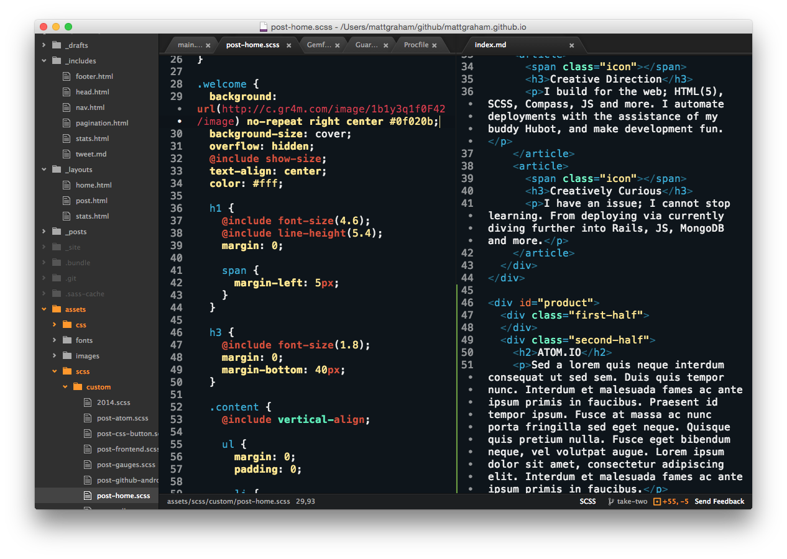
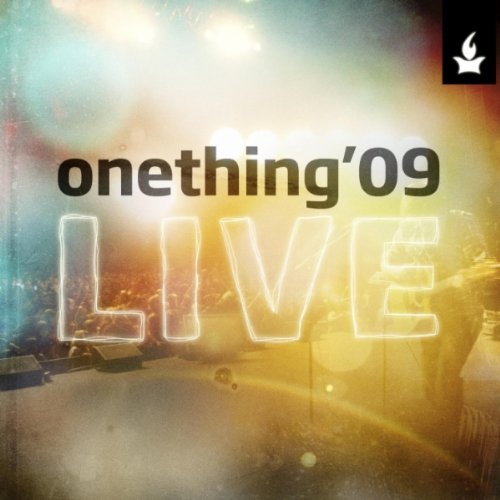

UX in
ENV['Production']
I am a UX professional that brings design to production. I'm professionally proficient in most of the current design tools such as Figma, Sketch, Adobe Creative Suite (including print), however, I'm passionate about taking UX from discovery into development. I'm extremely proud to have written code in developer applications used around the world, including but not limited to, Heroku Purple3 CSS Framework, Heroku Dashboard, Heroku Marketing sites, Elements Marketplace, Salesforce (sf) CLI, CodeBuilder, Atom Editor, GitHub, GitHub for Android, SpeakerDeck, HarmonyApp, Gauges, and more.
$ sf
The Salesforce CLI
VERSION
@salesforce/cli/1.0.1 darwin-x64 node-v12.15.0
$ sf org create -n MyOrg
What kind of environment do you want to create?
| ➡ | Scratch Org |
| Sandbox Org |
Choose a Dev Hub to use to create your Scratch Org
| ➡ | DevHub1 (mydevhublogin@org.salesforce.com) |
| Log in to another Dev Hub | |
| Compute Org |
One of the most difficult leaps in my design career has been designing for the future Salesforce Unified CLI. sf is a new cli (built on top of OCLIF, which I was also able to help with designning years ago) with the primary goal of unifing all the salesforce brands and future features in a brand new CLI.
I've nearing my tenth year anniversary with Heroku / Salesforce now as a lead product designer. I've designed and seen launched the first ever Heroku Elements Marketplace (including the internal partner portal), designed and devloped all kinds of features within the Heroku Dashboard, contributed to several versions of the design systems among many other things.

Heroku Postgres
Reliable and powerful database as a service based on PostgreSQL.

Heroku Connect
Salesforce Data Synchronization Service on the Heroku platform.

Heroku Scheduler
Run scheduled tasks every 10 minutes, every hour, or every day.

Heroku Kafka
Reliable and powerful Apache Kafka as a service on the Heroku platform.
6 Regions
App Sharable
Multiple Installs
Plans starting at: $100 Mo.
View Details
Rescue Diver
Explore the world of Search and Recovery team management through the lens of a dedicated group of dive team members who experience it firsthand every day. Rescue Diver, a project born out of passion, had its inception in 2016 for a specific search and rescue team. Since then, it has been undergoing redevelopment in Rails with the goal of being launched as a Software as a Service (SaaS) in the near future.

Atom is an open source text editor built as a desktop application based on web technologies. It has all your native menus and dialogs, and full access to the file system. What makes it different than say Sublime then? The power of the opensource community.
At GitHub I was part of the team who took Atom from a neat idea to a completely open source application that the market is now running with. I helped design and develop base UI and syntax themes, UX experience, marketing materials, among other elements.
Play was how we did music at GitHub. As taken from the readme, "Play is an employee-powered iTunes-based client-driven distributed music server for your office. Also it can prepare your taxes." I never got it to do my taxes, however being able to queue up music across the world and stream along side your remote co-workers; that was done well. Play was a Rails app originally built off iTunes DJ and later moved to MPD
I worked on designing iOS and Android apps, web interface, wrote markup and styles for the web app and even did a little speaking on Play. Additional design elements can be found on dribbble.

Onething Live
Forerunner Music
- Lowest Place
- You Made a Way
- I Put On Christ
- Psalm of Abraham
- Where I Belong
- My Beloved
- People Get Ready
- Forevermore
- Real Love
- Grace to Love You
- Reason to Dance
- Whom the Son Sets Free
- No One Else
Create, manage, and discuss issues and stay up to date with an integrated news feed for all your organizations, friends, and repositories. View your issues dashboard to stay connected with all the issues you've reported, been assigned, or participating in the discussion on. You can also view and filter a repository's issue list and bookmark it for quick access.
I was the solo designer that worked alongside two incredible developers to build and opensource GitHub for Android.